器材库 > APS及其以下画幅可换镜头数码相机 > EOS M3
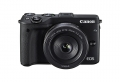
规格总览
产品类型
APS画幅可换镜头数码相机
发布日期
2015-02-10
影像规格
影像传感器
CMOS
影像传感器尺寸
约22.3x14.9毫米
总像素
2470万
有效像素
2420万
影像处理器
DIGIC 6
低通滤镜
有
最大解像度
约2400万像素（6000 × 4000）
静态图像格式
JPEG, RAW, RAW+JPEG
短片尺寸
1920×1080（全高清）：30p/25p/24p 1280×720（高清）：60p/50p
短片格式
MPEG4-AVC/H.264
短片音效
具备内置立体声麦克风 外接立体声麦克风端子 可调节录音电平、具备风声抑制功能（使用内置麦克风时）、具备衰减器功能
除尘系统
开启/关闭电源时，可自动或手动实施
镜头和对焦
镜头卡口
Canon EF-M
兼容镜头
佳能EF-M、EF和EF-S镜头
对焦点
49点（最多）
对焦模式
Hybrid CMOS AF III （面部+追踪、单点自动对焦）
AF辅助灯
有
手动对焦
支持
曝光控制
测光系统
使用图像感应器的实时测光
测光模式
中央重点测光, 多分区评价测光, 点测光, 局部测光
测光范围
EV 1 ～ 20 （23℃、ISO 100）EV
曝光模式
Auto, P（程序自动曝光）, A（光圈优先自动曝光）, S（快门速度优先自动曝光）, M（手动测光曝光）
快门类型
电子控制焦平面快门
快门速度
1/4000至30秒（支持所有拍摄模式）、B门
闪光同步速度
1/200秒
曝光补偿
±3EV以以1/3级为单位调节EV级调整
自动曝光锁
有
自动包围曝光
在±2级间以1/3级为单位调节
ISO感光度
可扩展至100-25600
连拍
最高5fps
闪光灯
内置闪光灯
弹出式
闪光模式
E-TTL II
闪光指数
约5（ISO 100，以米为单位）
闪光补偿
±2EV以以1/3级为单位调节EV级调整
取景器/显示屏
LCD类型
彩色TFT LCD
LCD尺寸
3.0英寸
LCD像素
104万
LCD特性
触摸屏, 翻转屏
Live View
有
文件输入/输出
存储卡
SD/SDHC, SDXC
数据接口
高速USB
视频/音频接口
MIC 输入, HDMI Mini 输出
无线功能
Wi-Fi, NFC
支持打印协议
DPOF
电源
电池
电池LP-E17
续航能力
23℃时约250张、0℃时约185张
机身规格
颜色
黑色, 白色
尺寸
约110.9×68×44.4毫米mm
重量
约366克（CIPA方针：包括机身、电池、存储卡） 约319克（仅机身）g
其它
备注
外接电子取景器
q420510272016-03-05 21:075 分
操作性 5.00功能性 5.00美观性 5.00趣味性 5.00耐用性 5.00性价比 5.00解像力 5.00色彩还原 5.00
kianist2015-05-04 20:454.19 分
操作性 5.00功能性 4.50美观性 4.50趣味性 3.00耐用性 4.00性价比 3.00解像力 4.50色彩还原 5.00
产品图 / 样片
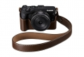
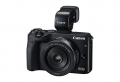
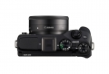
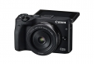
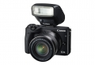
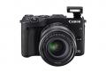
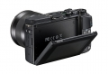
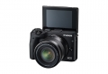
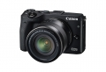
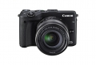
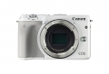
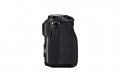
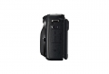
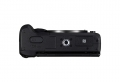
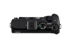
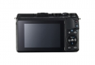
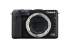
评测 / 相关文章
- 详细内容 （存档）
- ［试用］佳能EOS M3入手开箱 （存档）
相关文章
- ［试用］佳能EOS M3入手开箱 （存档）
- ［试用］大兵小将—EOS M3 （原站已下线）
- ［试用］我的M3，我的小花瓶 （原站已下线）
- ［资讯］佳能发布微型可换镜数码相机新品EOS M3 （存档）